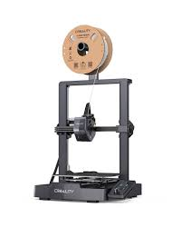

The first step to conveting your CAD design into a 3D printed object is to export your design. There are several file formats to choose from but STL works fine.
Then, you need to use a type of software called a slicer. I use a popular slicer called Cura. The slicer converts your model into a gcode file, essentially instructions for the 3D printer. The slicer also allows you to tweak various settings for the print, including supports for overhangs and bed adhesion structures which help ensure print quality.
Once you have your gcode file, you need to move it to the 3D printer, which can be done over LAN and/or physically moving the file with a hard drive, depending on the printer. You then want to make sure the printer's bed is level, which some printers allow you to do automatically. For best results, I usually just use a piece of paper between the bed and the nozzle and adjust until I feel the right amount of tension on the paper
Now, it is almost time to print. Make sure you insert the end of the filament into the print head, and follow whatever other instructions the printer gives you. After that, you can start the print and watch it work. Pay close attention to the first layer, since it is the most likely layer to fail and mess up your entire print.
Below is the printer I use!
